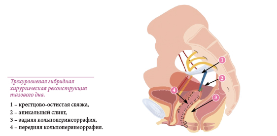

Когда речь идет об опущении передней стенки влагалища, чаще всего имеется в виду цистоцеле (опущение мочевого пузыря), задней стенки – ректоцеле и энтероцеле (опущение прямой кишки и/или тонкой кишки).
Классификация опущения тазовых органов:
I степень
Опущение передней и/или задней стенок влагалища (стенки не выходят за пределы входа во влагалище).
II степень
Выпадение передней и/или задней стенок влагалища (стенки находятся кнаружи от входа во влагалище).
III степень
Полное выпадение влагалища, которое сопровождается выпадением матки.
Наиболее часто встречаются следующие типы пролапса тазовых органов:
- Цистоцеле (др. греч. kystis - мочевой пузырь, kēlē —выпячивание) - опущение мочевого пузыря и передней стенки влагалища,
- Ректоцеле (лат. - rectum – прямая кишка, kēlē — выпячивание) - опущение прямой кишки и задней стенки влагалища,
- Опущение матки
Чаще всего данное состояние описывают как "опущение стенок влагалища" или даже "опущение матки"
//= template/two_columns/two-columns_33.htmlЛечение
Непосредственной причиной развития опущения является анатомический дефект связочного аппарата тазового дна (разрывы фасций). В связи с этим единственным эффективным методом лечения признано хирургическое восстановление целостности поврежденных структур. Сделать это можно двумя способами.
Первый способ предполагает «зашивание» дефектов связок (фасций) специальным хирургическим шовным материалом. При грамотном определении показаний и хорошем исполнении подобные операции обеспечивают хорошие результаты. К сожалению, при выраженных формах опущения «пластика» собственными тканями крайне неэффективна – рецидивы имеют место в 30-60% случаев.
Очень часто больным с опущением матки предлагают удалить этот «бесполезный и даже вредный орган». Со всей ответственностью хочется заявить: если матка здорова (нет полипов, выделений, мазки на онкоцитологию в норме и т.д.), удаление ее – абсолютно порочная операция!
Матка не является причиной опущения матки! Причина, как уже говорилось – дефекты связочного аппарата тазового дна! Следуя логике, утверждающей, что «опущенную матку надо удалить», неплохо удалять мочевой пузырь при цистоцеле и прямую кишку при ректоцеле! При удалении матки не снижается, а повышается риск дальнейшего пролапса!
Вторая группа операций – протезирование несостоятельного связочного аппарата тазового дна синтетическими эндопротезами (сетками). При выраженных формах пролапса подобные операции обеспечивают несопоставимо лучшие анатомические и функциональные результаты, чем традиционные пластики. Но они таят в себе целый ряд серьезных опасностей! Синтетика требует глубочайшего понимания хирургом анатомии тазового дна и владения всеми техническими нюансами использования «сеток». Практика более чем убедительно показала, что это не пустые слова. Недостаточно обученные специалисты уже изрядно наломали «синтетических дров»… В случае возникновения осложнений, их «авторы» обычно ругают сетки. Но в 90% случаев проблемы связаны совсем не с имплантом.
Гибридная реконструкция тазового дня, разработанная в нашем центре
Понятие «гибрид» (греч. ὕβριδικά – помесь) обозначает объект, сочетающий в себе свойства двух и более объектов. Предлагаемое нами вмешательство соответствует этому определению, оно сочетает в себе надежность сетчатой хирургии с безопасностью реконструкции собственными тканями. Глобально суть метода можно описать следующим образом: выполняется одновременное восстановление апикального пролапса и дефекта влагалищной фасции в переднем и/или заднем отделах и при необходимости структур промежности.
Состоит операция из нескольких основных элементов:
1. «Протезирование» крестцово-маточных связок апикальным слингом.
2. Восстановление фасции путем субфасциальной кольпоррафии.
В отличие от традиционной кольпоррафии, представляющей собой наложение отдельных швов на наружную поверхность влагалищной фасции, мы используем субфасциальную методику наложения шва. Данная модификация позволяет нам минимизировать риски эрозии слизистой и максимально эффективно произвести реконструкцию.
3. Соединение кольпоррафического шва с установленным эндопротезом – создание «единой конструкции».
4. Восстановление поврежденных структур промежности и ректовагинальной (прямокишечно-влагалищной) фасции, снимающее чрезмерную нагрузку с вышестоящих уровней поддержки, что позволило свести количество используемого синтетического материала к минимуму.

Описанная выше методика сакроспинальной (крестцово-остистой) фиксации является унилатеральной (односторонней), что позволило наполовину снизить количество перманентного синтетического материла и повысить безопасность. И главное – кроме первого и второго уровней поддержки восстанавливается и третий, за счет выполнения кольпоперинеоррафии (наложение швов на влагалище и промежность). Последняя выступает в роли основы для вышестоящих уровней.
Таким образом достигается комплексная реконструкция тазового дна с минимальным использованием синтетических материалов. Средняя длительность данного вмешательства составляет 40-45 минут. Выполняется влагалищным доступом. После операции у пациенток есть всего два одиночных кожных шва в ягодичных областях – местах, где проводился эндопротез-лента. Проведенные нами исследования выявили высокую эффективность гибридной реконструкции, превышающую 90% в течение 2 лет после оперативного лечения. Пациентки выписываются из стационара на вторые сутки после вмешательства и в большинстве случаев сразу могут возвращаться к своей привычной жизни.
Реконструктивная хирургия тазового дна – очень специфическая область. Если вы столкнулись с проблемой опущения органов малого таза – ищите специалистов, которые уверенно себя чувствуют в ней. Тогда шанс вернуться к полноценной жизни будет максимальным.
В нашей клинике выполняется более 800 операций в год по поводу недержания мочи у женщин и еще 1900 - при пролапсе (опущении) тазовых органов (также и в сочетании с недержанием мочи)